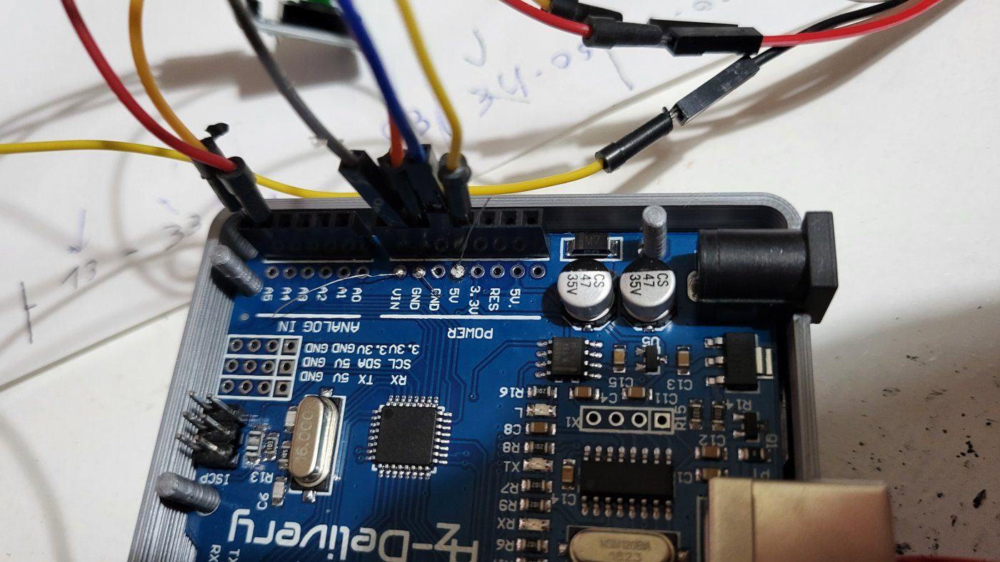
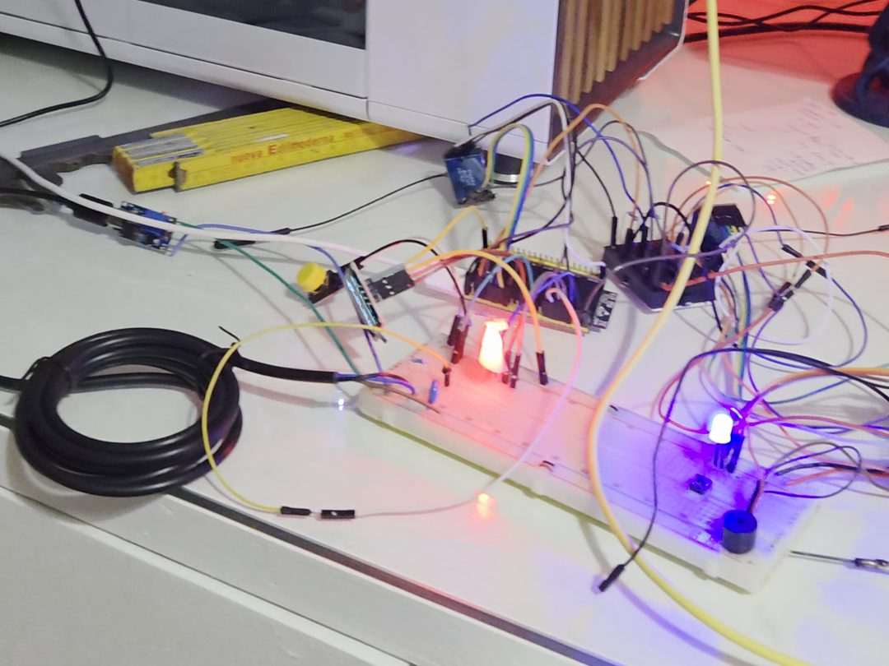
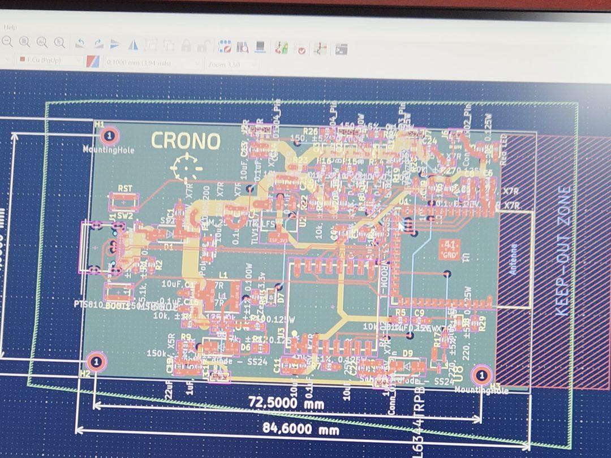
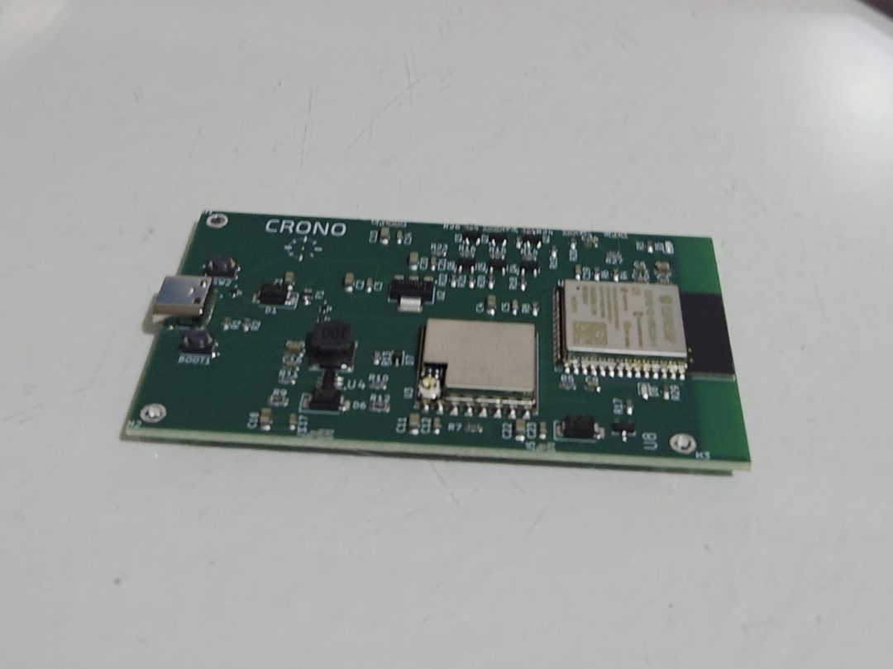
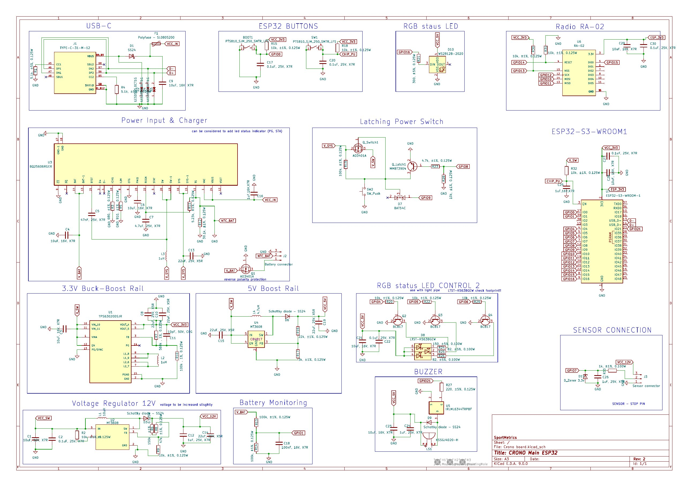

01 — 2024
CRONO
Stopped in 2025. At the bottom of the page I explain why.
Photocell timing is how athletics coaches measure sprints, hurdles and repeats. The professional systems cost between €550 and €700. The cheap ones start under €150, but they do not state how accurate they are. Nothing sat in between: a system a small club, a school or a single athlete could afford, with accuracy they could trust. CRONO was built for that gap, at roughly half the professional price.
It started with a request
Some people from the athletics world asked me for a timing system that worked and did not cost €550, so I built a prototype for them. There was more than one of them, and they talked to other people in their field, who were interested as well. I never ran a formal validation. In practice it was already done, because the demand came from people who knew the market and wanted the product.
How it is built
Each photocell is a self-contained device: microcontroller, infrared sensor, radio, battery, buzzer and LEDs, inside a 3D-printed shell with a 1/4" threaded insert for a tripod. Two units make the base kit, start and finish, and more can be added for split times. The battery is part of the second board: the prototype and the first board had none.
- MCU
- ESP32-S3 (WROOM-1)
- Radio
- LoRa RA-02 module, long range, low power, reliable across the length of a track
- Sensor
- High-reactivity infrared beam
- Power
- Rechargeable Li-ion over USB-C, latching power circuit with software shutdown
- PCB
- Board designed in KiCad, schematic, layout and a footprint for the logo
- Enclosure
- 3D printed PETG/PLA, 1/4" tripod insert, optional hurdle mount
- App
- Flutter, one codebase for iOS and Android
From the first version to the board
The first version was a very basic prototype: a few components and cables connected to an Arduino. It was enough to show the idea worked. Then I designed and printed the PCB, and we validated the product with it. It was a bit big, and using it showed us what to change.




The prototype and the first board had no battery. We already had ideas to make it better: adding a battery, a smaller board, better sensors. I started working on a second board, and some work was done after the prototype, before we decided to stop. The schematic below is for that second board. It is not finished, because I stopped before it was.

The part I found most interesting: the communication
I built the whole communication protocol for CRONO myself: Bluetooth between the ESP32 and the Flutter app, and LoRa between the photocells. It covers the normal exchange of data, firmware updates from the phone, and the time matching that makes the time reading reliable.
The photocells talk to the main unit over LoRa, a radio link, so no cables and no Wi-Fi. When it is switched on, the main unit finds the photocells that are on and gives each one a role: start or intermediate.
Every device has its own clock, and the clocks do not start together, so a time from a photocell cannot be used as it is. Time matching fixes that. The main unit and the photocell exchange a few messages with their clock readings, and from those they work out the difference between the two clocks, taking into account the time the radio message takes. When the sensor triggers, the photocell corrects its time by that difference before sending it, so every time arrives already on the main unit's clock. The exchange repeats every 30 seconds to keep the clocks aligned.
The start photocell can also run the audible start: two beeps, a random pause and a longer final beep. The start time is taken at that final beep.
I wanted CRONO to be able to improve after it was sold, so the phone can also update the firmware over Bluetooth.
Messages use an XML-like syntax, closed with an asterisk in the app → device direction. The firmware is sent in 128-byte chunks, and each chunk has to be acknowledged before the next one goes out, so partial data never ends up in flash.
APP → <CMD>START_OTA</CMD>* ESP ← <STATE>OTA_MODE</STATE>* APP → <SIZE>firmware_size</SIZE>* ESP ← <STATE>SIZE_OK</STATE>* APP → [chunk 1 · 128 bytes] ESP ← <STATE>CHUNK_OK</STATE>* …repeat until complete… APP → <END>* ESP ← <STATE>OTA_COMPLETE</STATE>*
The same channel carries the times (<TIME>00:10:296</TIME>*), the
device state (RUNNING, WAITING) and the firmware version. If
anything goes wrong the device goes into OTA_FAIL and the app stops the
update.
Accuracy, tested against a professional system
I tested the prototypes next to a Microgate Witty, one of the professional references in the field, timing the same runs at the same moment. The difference stayed under 0.01 seconds.
For sprints, hurdles and repeats that is enough. Going further would have cost a lot and would have changed no training decision.
The prototype also had one feature the competing systems did not: an audible start generated by the start photocell itself. Microgate and Freelap need a tablet or an external command. With CRONO, an athlete training alone can start the run without anyone's help.
The numbers
The plan was to have SportMetrics as the business and CRONO as the product. The numbers below are from the SportMetrics plan.
I wrote a full business plan and revised it during 2025: bill of materials at component level, variable and fixed costs, competitor analysis, Kickstarter prices, and risks. The October 2025 version compares four launch scenarios, and the numbers below are from it.
- Variable cost
- ≈ €130 per kit
- Planned price
- €250 or €299 on Kickstarter · €299–339 at retail afterwards
- Competition
- Microgate Witty ≈ €550–700 · Freelap ≈ €700+ · entry-level generics under €150 with no stated accuracy
- Fixed costs
- €10,000 in every scenario
- Planned launch
- Kickstarter, four scenarios: 126 to 250 kits sold, targets from €37,700 to €62,500
In all four scenarios the Kickstarter was sized to cover the €10,000 of fixed costs and the production, with about €1,400 left over. Any real profit depended on selling the extra kits after the campaign.
Why it stopped
Two things stopped it: the margins and the team.
The business plan is where it started to fall apart. A cheap product has a cost to build, and that cost left little margin, so you need a lot of customers to make it work. Then, in 2025, new competitors arrived at lower prices. Even with features they did not have, the margin got thin in exactly the price range where the project made sense, and covering the fixed costs would have needed volumes that were no longer realistic.
The plan was to launch on Kickstarter, which would have been a second validation. The product was a niche one, though, and I was not sure it would have been easy to get people to pay that much for it.
The other reason was the team. The people around the project had asked me for a timing system that worked for them, and my friends liked the prototype and used it. Others were more interested in actually making it a product, but that was not enough. Taking it further needed a team with the drive to do it, and that was missing. Money was not the problem. It was a big project that needed a lot of time, and people only give that much time to something they are really keen on. Athletics is not my field, so the market knowledge and the contacts came from these people, and when their drive dropped, the part I could not replace went with it.
What I took from it
The prototype worked, the accuracy numbers were real and my friends used it. The biggest thing I learned is how much a project like this depends on having a team that wants to take it further, and how hard it is to find people motivated enough for something this big.
On the technical side I learned a lot: making the PCB, 3D printing the enclosure and putting everything together. I also had to find suppliers, and that was not easy at all. Sometimes it is really hard to find a supplier for what you need.
Last, I had to work out whether there was a viable business plan, and whether it made sense. It showed me that a cheap product is hard to make: the cost to build it leaves little margin, so you need a lot of customers.